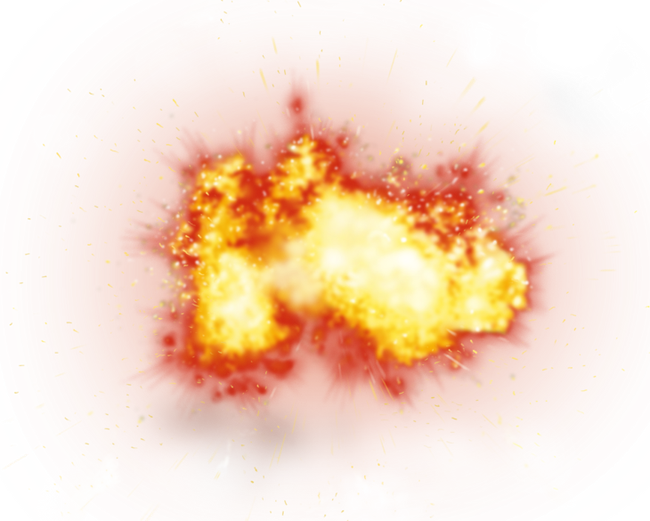
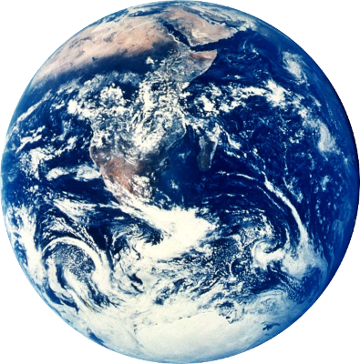
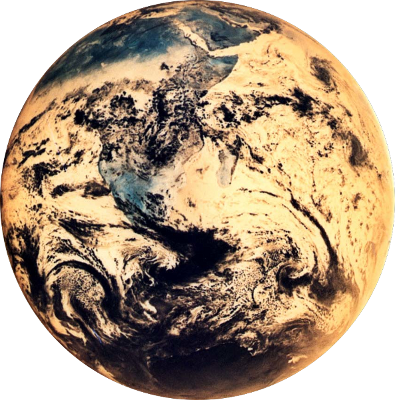
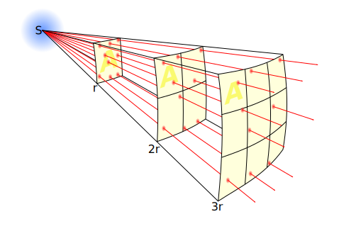
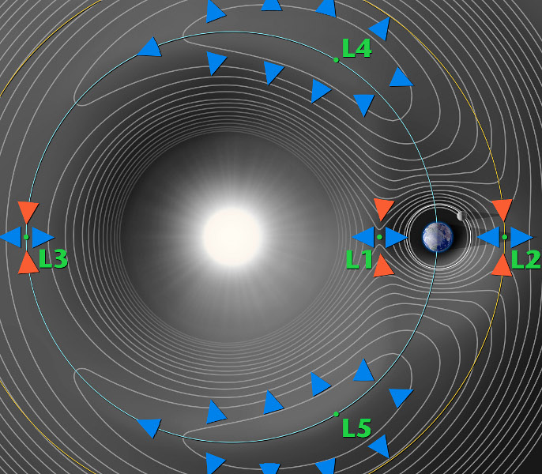
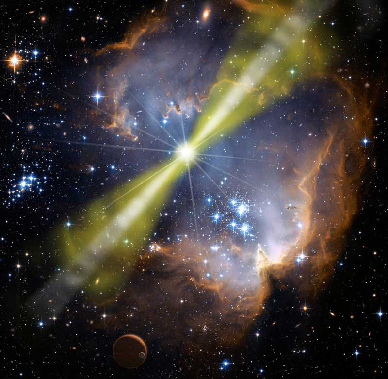

Astrophysics
for
Supervillains
Your instructor approaches!
Tyrant of a Thousand Suns
Subjugator of Solar Systems
and Mastermind Extraordinaire
A name that inspires fear across the galaxy…
SCOTT THOMAS
Your instructor approaches!
Tyrant of a Thousand Suns
Subjugator of Solar Systems
and Mastermind Extraordinaire
A name that inspires fear across the galaxy…
SCOTT THOMAS
Supervillain Academy Class of '61
The Supervillain Creed
Impressive
Ingenious
Impractical
Dream
Big
Dream
Bigger

How to Destroy the Earth
Blow it up
Tear it apart
Fry it
Other
How to Destroy the Earth
Blow it up
Tear it apart
Fry it
Other
Hit It With A Rock
Requirements:
- Extremely large rock
$K = {1 \over 2}mv^2$
- Rockets (many)
£££
- Very good mathematicians
Collisions gone wrong
Blow it up with antimatter
 
Blow it up with antimatter
How to Destroy the Earth
Blow it up
Tear it apart
Fry it
Other
Gravitational waves
Gravitational waves
How close?
How close?

The inverse square law

How to Destroy the Earth
Blow it up
Tear it apart
Fry it
Other
Focused Energy
Lagrange Points

Gamma-ray bursts

Bring the sun to us
How to Destroy the Earth
Blow it up
Tear it apart
Fry it
Other
Patience
- Rogue stars
- Death of the Sun
- The Big Crunch
- Decay
Summary
- Don't even think about destroying Earth without astrophysics.
- Remember the inverse-square law.
- Be patient.
- Always, always have a back-up plan.
…and remember that you will probably fail.
The End
"How to Destroy the Earth": http://www.qntm.org/destroy